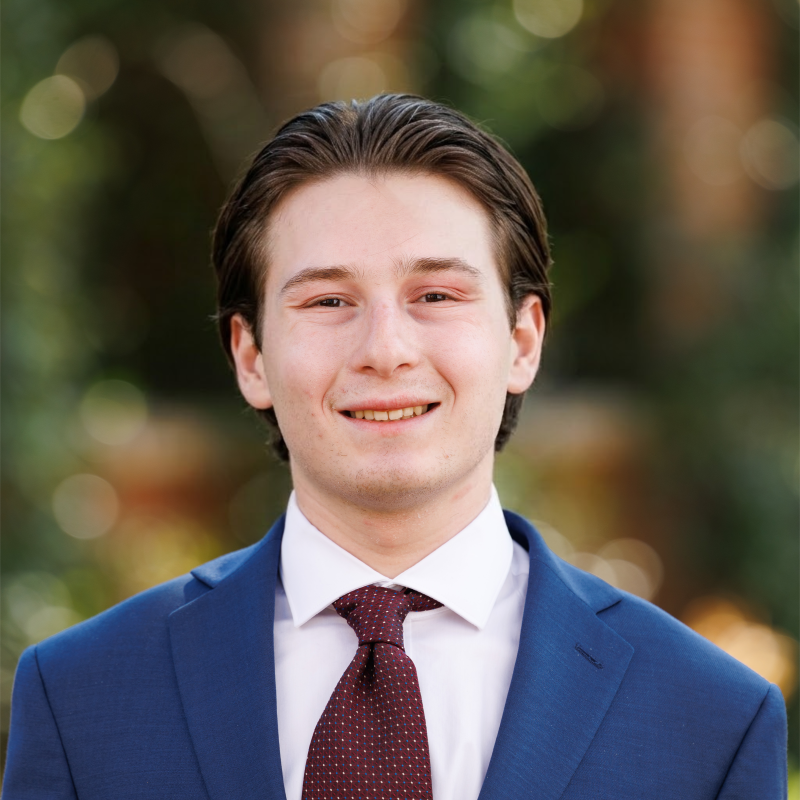

JD
jason dobuler
dob
·
u
·
ler
IPA: /ˈdɑb.ju.lɚ/
Professional Profile
I am a J.D. candidate at the University of Florida Levin College of Law with a strong foundation in advertising, public relations, and legal research. I am developing a specialized focus in Bankruptcy and Creditors' Rights, backed by federal judicial internship experience, upcoming summer associate practice at a leading regional firm, and work as a research assistant. Feel free to connect with me on LinkedIn.
Education
University of Florida Levin College of Law
Expected May 2028
Juris Doctor Candidate
GPA: 3.55 | Rank: 49/225 (Top 22%)
- Honors: Ethos of Excellence Scholar (Full Tuition, Merit-Based Scholarship)
-
Activities:
- Journal of Technology Law & Policy: Research Editor
- Student Bar Association: 2L Representative
- Teaching Assistant: Legal Research (Fall 2026)
- Research Assistant: Professor Christopher D. Hampson
- American Bankruptcy Institute: Member
University of Central Florida
May 2025
Bachelor of Arts in Advertising and Public Relations
GPA: 3.92 | Magna Cum Laude
- Honors: University Honors (Burnett Honors College)
- Leadership: Public Relations Officer, ASL Knights (American Sign Language club), managing strategic outreach and community engagement
Legal Experience
Trenam Law
Upcoming Summer 2027
Incoming Summer Associate
Tampa, FL
- Accepted 10-week summer program offer (May 24 – July 30, 2027) with primary practice rotation in the Bankruptcy & Creditors' Rights group.
United States Bankruptcy Court (SDFL)
June 2026 – July 2026
Judicial Intern to the Honorable Mindy A. Mora
West Palm Beach, FL
- Attended and analyzed court hearings, motions, and status conferences, discussing judicial decisions and reasoning directly with Judge Mora and law clerks.
- Presented a mock oral argument in front of Judge Mora.
Marketing Experience
Climate First Bank
June 2023 – July 2025
Marketing Assistant
Winter Park, FL
- Managed digital presence and multiple social media channels, writing engaging blog posts and web copy.
- Captured corporate milestones and outreach programs via professional photography and videography.
- Analyzed user engagement metrics and demographic trends to optimize content performance and foster audience growth.
UCF Burnett Honors College
August 2022 – November 2023
Marketing Assistant
Orlando, FL
- Produced, filmed, and edited promotional videos to engage current students and attract prospective applicants.
- Photographed campus activities and tracked audience metrics across digital communication channels.
- Conducted interviews with student ambassadors to create compelling profile and promotional materials.
Early Leadership & Honors
Jupiter High School
Graduated May 2022
Selected Student Achievements
Jupiter, FL
- Managing Editor, Jupiter War Cry (Student Newspaper): Guided editorial policies, managed staff, and wrote articles during senior year.
- News Anchor, Jupiter High Student News: Anchored daily school-wide news broadcasts across a four-year tenure.
- Pathfinder Award Nominee in Communications: Nominated by school faculty to represent Jupiter High School for the prestigious Palm Beach Post county-wide scholarship.
- First Place in Screenwriting, Student Showcase of Films: Won first place in the screenplay category for the screenplay, An Odorless Ordeal (April 2019).